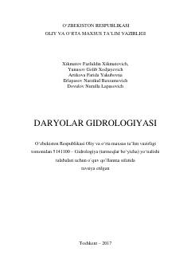

DGDaryolar gidrologiyasining nazariy asoslari, suv rejimi va gidrologik jarayonlarga bag'ishlangan o'quv qo'llanma.
Mazkur o'quv qo'llanmada daryolar gidrologiyasining nazariy va amaliy asoslari, jumladan, tabiatda suvning aylanishi, daryolar morfologiyasi hamda morfometriyasi yoritilgan. Shuningdek, daryolar oqimining hosil bo'lishi, suv rejimi, to'yinish manbalari va suv resurslaridan samarali foydalanish masalalari ilmiy jihatdan tahlil qilingan. Qo'llanma oliy o'quv yurtlarining gidrologiya va geografiya yo'nalishlari talabalari hamda mutaxassislar uchun mo'ljallangan.